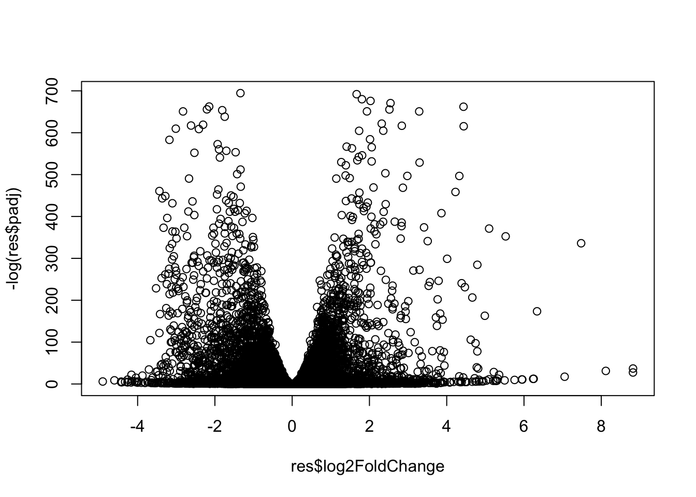
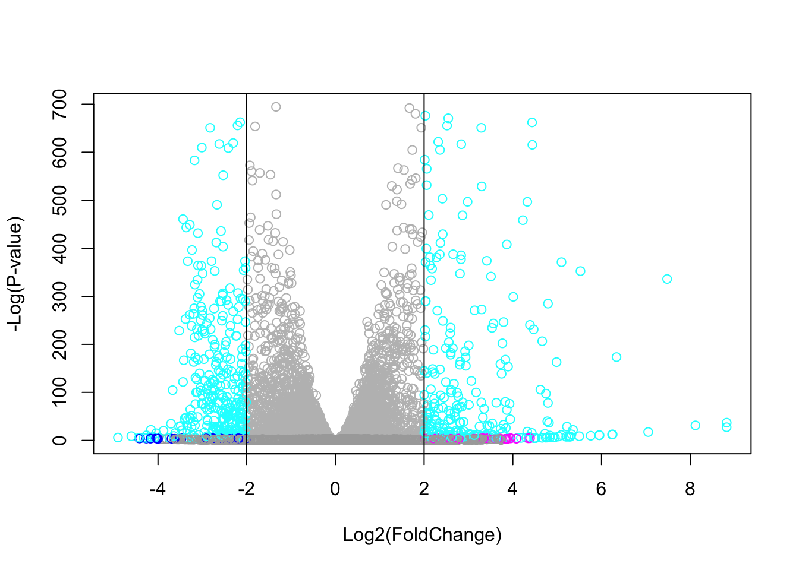
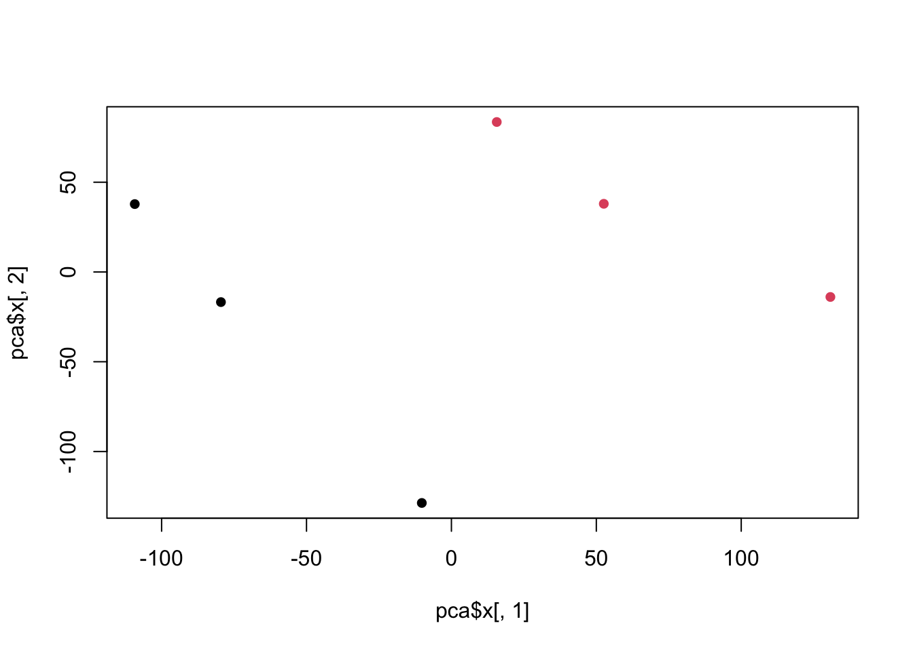

colData <- read.csv("GSE37704_metadata.csv", row.names=1)
#colDataLab 13
Background
We will do all of the following: - DESeq Analysis - Visualization - Gene Annotation - Pathway Analysis
The data for for hands-on session comes from GEO entry: GSE37704, which is associated with the following publication:
Trapnell C, Hendrickson DG, Sauvageau M, Goff L et al. “Differential analysis of gene regulation at transcript resolution with RNA-seq”. Nat Biotechnol 2013 Jan;31(1):46-53. PMID: 23222703
1. Read contData and colData
We need at least two tthingss for this type of analysis: - countData - colData (aka Metedata)
countData <- read.csv("GSE37704_featurecounts.csv", row.names=1)
#countData2. Fix countData
I need to remove the first length column and also heck that the colData and countData match up
Q. Complete the code below to filter countData to exclude genes (i.e. rows) where we have 0 read count across all samples (i.e. columns).
countData <- as.matrix(countData[,-1])
head(countData) SRR493366 SRR493367 SRR493368 SRR493369 SRR493370 SRR493371
ENSG00000186092 0 0 0 0 0 0
ENSG00000279928 0 0 0 0 0 0
ENSG00000279457 23 28 29 29 28 46
ENSG00000278566 0 0 0 0 0 0
ENSG00000273547 0 0 0 0 0 0
ENSG00000187634 124 123 205 207 212 258Check to see if they’re the same
all (rownames(colData) == colnames(countData))[1] TRUEWe can sum across the row and if we get a zero, we have no counts in any exp for a given gene
keep.inds <- rowSums(countData) != 0
counts <- countData[keep.inds,]Check to see how many genes we have left
nrow(counts)[1] 15975library(DESeq2)
dds = DESeqDataSetFromMatrix(countData=countData,
colData=colData,
design=~condition)Warning in DESeqDataSet(se, design = design, ignoreRank): some variables in
design formula are characters, converting to factorsdds = DESeq(dds)res = results(dds)Q. Call the summary() function on your results to get a sense of how many genes are up or down-regulated at the default 0.1 p-value cutoff.
summary(res)
out of 15975 with nonzero total read count
adjusted p-value < 0.1
LFC > 0 (up) : 4349, 27%
LFC < 0 (down) : 4393, 27%
outliers [1] : 0, 0%
low counts [2] : 1221, 7.6%
(mean count < 0)
[1] see 'cooksCutoff' argument of ?results
[2] see 'independentFiltering' argument of ?resultsplot(res$log2FoldChange, -log(res$padj))
Q. Improve this plot by completing the below code, which adds color and axis labels
mycols <- rep("gray", nrow(counts))
mycols[res$log2FoldChange > 2 ] <- "magenta"
mycols[res$log2FoldChange < -2 ] <- "blue"
mycols[res$padj > 0.05] <- "darkgray"
inds <- (res$padj < 0.01) & (abs(res$log2FoldChange) > 2 )
mycols[ inds ] <- "cyan"
# Volcano plot with custom colors
plot( res$log2FoldChange, -log(res$padj),
col=mycols, ylab="-Log(P-value)", xlab="Log2(FoldChange)" )
# Cut-off lines
abline(v=c(-2,2), col="black")
Quality Control with PCA
The prcomp() function in base R is often used to check the difference in samples
pca <- prcomp(t(counts), scale = T)
summary(pca)Importance of components:
PC1 PC2 PC3 PC4 PC5 PC6
Standard deviation 87.7211 73.3196 32.89604 31.15094 29.18417 6.648e-13
Proportion of Variance 0.4817 0.3365 0.06774 0.06074 0.05332 0.000e+00
Cumulative Proportion 0.4817 0.8182 0.88594 0.94668 1.00000 1.000e+00Our PCA score plot (aka PC1 vs PC2)
plot(pca$x[,1], pca$x[,2], col = as.factor(colData$condition), pch=16)
#good quality control3. DESeq Analysis
library(DESeq2)First, I need to setup the input object required be DESeq
dds <- DESeqDataSetFromMatrix(countData = counts,
colData = colData,
design= ~condition)Warning in DESeqDataSet(se, design = design, ignoreRank): some variables in
design formula are characters, converting to factorsdds <- DESeq(dds)estimating size factorsestimating dispersionsgene-wise dispersion estimatesmean-dispersion relationshipfinal dispersion estimatesfitting model and testingres <- results(dds)
head(res)log2 fold change (MLE): condition hoxa1 kd vs control sirna
Wald test p-value: condition hoxa1 kd vs control sirna
DataFrame with 6 rows and 6 columns
baseMean log2FoldChange lfcSE stat pvalue
<numeric> <numeric> <numeric> <numeric> <numeric>
ENSG00000279457 29.9136 0.1792571 0.3248216 0.551863 5.81042e-01
ENSG00000187634 183.2296 0.4264571 0.1402658 3.040350 2.36304e-03
ENSG00000188976 1651.1881 -0.6927205 0.0548465 -12.630158 1.43990e-36
ENSG00000187961 209.6379 0.7297556 0.1318599 5.534326 3.12428e-08
ENSG00000187583 47.2551 0.0405765 0.2718928 0.149237 8.81366e-01
ENSG00000187642 11.9798 0.5428105 0.5215598 1.040744 2.97994e-01
padj
<numeric>
ENSG00000279457 6.86555e-01
ENSG00000187634 5.15718e-03
ENSG00000188976 1.76549e-35
ENSG00000187961 1.13413e-07
ENSG00000187583 9.19031e-01
ENSG00000187642 4.03379e-014. Add gene annotation
Q. Use the mapIDs() function multiple times to add SYMBOL, ENTREZID and GENENAME annotation to our results by completing the code below.
library(AnnotationDbi)
library(org.Hs.eg.db)columns(org.Hs.eg.db) #check what columns there are [1] "ACCNUM" "ALIAS" "ENSEMBL" "ENSEMBLPROT" "ENSEMBLTRANS"
[6] "ENTREZID" "ENZYME" "EVIDENCE" "EVIDENCEALL" "GENENAME"
[11] "GENETYPE" "GO" "GOALL" "IPI" "MAP"
[16] "OMIM" "ONTOLOGY" "ONTOLOGYALL" "PATH" "PFAM"
[21] "PMID" "PROSITE" "REFSEQ" "SYMBOL" "UCSCKG"
[26] "UNIPROT" I will use the mapIDs() to add SYMBOL and ENTREZID annotation to or results
res$symbol <- mapIds(org.Hs.eg.db,
keys = rownames (counts),
keytype = "ENSEMBL",
column = "SYMBOL")'select()' returned 1:many mapping between keys and columnsand the ENTREZ ID required for the KeGG and GO etc
res$entrez <- mapIds(org.Hs.eg.db,
keys = rownames (counts),
keytype = "ENSEMBL",
column = "ENTREZID")'select()' returned 1:many mapping between keys and columnshead(res)log2 fold change (MLE): condition hoxa1 kd vs control sirna
Wald test p-value: condition hoxa1 kd vs control sirna
DataFrame with 6 rows and 8 columns
baseMean log2FoldChange lfcSE stat pvalue
<numeric> <numeric> <numeric> <numeric> <numeric>
ENSG00000279457 29.9136 0.1792571 0.3248216 0.551863 5.81042e-01
ENSG00000187634 183.2296 0.4264571 0.1402658 3.040350 2.36304e-03
ENSG00000188976 1651.1881 -0.6927205 0.0548465 -12.630158 1.43990e-36
ENSG00000187961 209.6379 0.7297556 0.1318599 5.534326 3.12428e-08
ENSG00000187583 47.2551 0.0405765 0.2718928 0.149237 8.81366e-01
ENSG00000187642 11.9798 0.5428105 0.5215598 1.040744 2.97994e-01
padj symbol entrez
<numeric> <character> <character>
ENSG00000279457 6.86555e-01 NA NA
ENSG00000187634 5.15718e-03 SAMD11 148398
ENSG00000188976 1.76549e-35 NOC2L 26155
ENSG00000187961 1.13413e-07 KLHL17 339451
ENSG00000187583 9.19031e-01 PLEKHN1 84069
ENSG00000187642 4.03379e-01 PERM1 84808Q. Finally for this section let’s reorder these results by adjusted p-value and save them to a CSV file in your current project directory.
res = res[order(res$pvalue),]
write.csv(res, file="deseq_results.csv")5. Pathways analysis or Gene Set Enrichment
We can use gage() withg KEGG and GO
library(gage)
library(gageData)
library(pathview)library(gage)
library(gageData)
data(kegg.sets.hs)
data(sigmet.idx.hs)
# Focus on signaling and metabolic pathways only
kegg.sets.hs = kegg.sets.hs[sigmet.idx.hs]
# Examine the first 3 pathways
head(kegg.sets.hs, 3)$`hsa00232 Caffeine metabolism`
[1] "10" "1544" "1548" "1549" "1553" "7498" "9"
$`hsa00983 Drug metabolism - other enzymes`
[1] "10" "1066" "10720" "10941" "151531" "1548" "1549" "1551"
[9] "1553" "1576" "1577" "1806" "1807" "1890" "221223" "2990"
[17] "3251" "3614" "3615" "3704" "51733" "54490" "54575" "54576"
[25] "54577" "54578" "54579" "54600" "54657" "54658" "54659" "54963"
[33] "574537" "64816" "7083" "7084" "7172" "7363" "7364" "7365"
[41] "7366" "7367" "7371" "7372" "7378" "7498" "79799" "83549"
[49] "8824" "8833" "9" "978"
$`hsa00230 Purine metabolism`
[1] "100" "10201" "10606" "10621" "10622" "10623" "107" "10714"
[9] "108" "10846" "109" "111" "11128" "11164" "112" "113"
[17] "114" "115" "122481" "122622" "124583" "132" "158" "159"
[25] "1633" "171568" "1716" "196883" "203" "204" "205" "221823"
[33] "2272" "22978" "23649" "246721" "25885" "2618" "26289" "270"
[41] "271" "27115" "272" "2766" "2977" "2982" "2983" "2984"
[49] "2986" "2987" "29922" "3000" "30833" "30834" "318" "3251"
[57] "353" "3614" "3615" "3704" "377841" "471" "4830" "4831"
[65] "4832" "4833" "4860" "4881" "4882" "4907" "50484" "50940"
[73] "51082" "51251" "51292" "5136" "5137" "5138" "5139" "5140"
[81] "5141" "5142" "5143" "5144" "5145" "5146" "5147" "5148"
[89] "5149" "5150" "5151" "5152" "5153" "5158" "5167" "5169"
[97] "51728" "5198" "5236" "5313" "5315" "53343" "54107" "5422"
[105] "5424" "5425" "5426" "5427" "5430" "5431" "5432" "5433"
[113] "5434" "5435" "5436" "5437" "5438" "5439" "5440" "5441"
[121] "5471" "548644" "55276" "5557" "5558" "55703" "55811" "55821"
[129] "5631" "5634" "56655" "56953" "56985" "57804" "58497" "6240"
[137] "6241" "64425" "646625" "654364" "661" "7498" "8382" "84172"
[145] "84265" "84284" "84618" "8622" "8654" "87178" "8833" "9060"
[153] "9061" "93034" "953" "9533" "954" "955" "956" "957"
[161] "9583" "9615" What gage() wants as input is that vector of importance - in our case that will be the log2 foldchange values, This vector sgoyld have names() that are entrez IDs
get the fold change vector
foldchange <- res$log2FoldChange
names(foldchange) <- res$entrezand run gage with KEGG Human set
# Get the results
keggres = gage(foldchange, gsets=kegg.sets.hs)pathview(gene.data=foldchange, pathway.id="hsa04110")'select()' returned 1:1 mapping between keys and columnsInfo: Working in directory /Users/nichellecamden 1/Desktop/bggn213/Lab13Info: Writing image file hsa04110.pathview.pngGene Ontology
data(go.sets.hs)
data(go.subs.hs)
# Focus on Biological Process subset of GO
gobpsets = go.sets.hs[go.subs.hs$BP]
gobpres = gage(foldchange, gsets=gobpsets, same.dir=TRUE)
lapply(gobpres, head)$greater
p.geomean stat.mean p.val
GO:0007156 homophilic cell adhesion 8.519724e-05 3.824205 8.519724e-05
GO:0002009 morphogenesis of an epithelium 1.396681e-04 3.653886 1.396681e-04
GO:0048729 tissue morphogenesis 1.432451e-04 3.643242 1.432451e-04
GO:0007610 behavior 2.195494e-04 3.530241 2.195494e-04
GO:0060562 epithelial tube morphogenesis 5.932837e-04 3.261376 5.932837e-04
GO:0035295 tube development 5.953254e-04 3.253665 5.953254e-04
q.val set.size exp1
GO:0007156 homophilic cell adhesion 0.1951953 113 8.519724e-05
GO:0002009 morphogenesis of an epithelium 0.1951953 339 1.396681e-04
GO:0048729 tissue morphogenesis 0.1951953 424 1.432451e-04
GO:0007610 behavior 0.2243795 427 2.195494e-04
GO:0060562 epithelial tube morphogenesis 0.3711390 257 5.932837e-04
GO:0035295 tube development 0.3711390 391 5.953254e-04
$less
p.geomean stat.mean p.val
GO:0048285 organelle fission 1.536227e-15 -8.063910 1.536227e-15
GO:0000280 nuclear division 4.286961e-15 -7.939217 4.286961e-15
GO:0007067 mitosis 4.286961e-15 -7.939217 4.286961e-15
GO:0000087 M phase of mitotic cell cycle 1.169934e-14 -7.797496 1.169934e-14
GO:0007059 chromosome segregation 2.028624e-11 -6.878340 2.028624e-11
GO:0000236 mitotic prometaphase 1.729553e-10 -6.695966 1.729553e-10
q.val set.size exp1
GO:0048285 organelle fission 5.841698e-12 376 1.536227e-15
GO:0000280 nuclear division 5.841698e-12 352 4.286961e-15
GO:0007067 mitosis 5.841698e-12 352 4.286961e-15
GO:0000087 M phase of mitotic cell cycle 1.195672e-11 362 1.169934e-14
GO:0007059 chromosome segregation 1.658603e-08 142 2.028624e-11
GO:0000236 mitotic prometaphase 1.178402e-07 84 1.729553e-10
$stats
stat.mean exp1
GO:0007156 homophilic cell adhesion 3.824205 3.824205
GO:0002009 morphogenesis of an epithelium 3.653886 3.653886
GO:0048729 tissue morphogenesis 3.643242 3.643242
GO:0007610 behavior 3.530241 3.530241
GO:0060562 epithelial tube morphogenesis 3.261376 3.261376
GO:0035295 tube development 3.253665 3.253665Reactome Analysis
We can use the online version for a fancy display
sig_genes <- res[res$padj <= 0.05 & !is.na(res$padj), "symbol"]
print(paste("Total number of significant genes:", length(sig_genes)))[1] "Total number of significant genes: 8147"write.table(sig_genes, file="significant_genes.txt", row.names=FALSE, col.names=FALSE, quote=FALSE)Then, to perform pathway analysis online go to the Reactome website (https://reactome.org/PathwayBrowser/#TOOL=AT). Select “choose file” to upload your significant gene list. Then, select the parameters “Project to Humans”, then click “Analyze”.
#Q: What pathway has the most significant “Entities p-value”? Do the most significant pathways listed match your previous KEGG results? What factors could cause differences between the two methods?
The pathway with the most significant “entities p-value” is the endosomal/ vacuolar pathway. no, not really It’s unclear why but could be related to differecnes in analyzing certain subsets over the whole dataset.